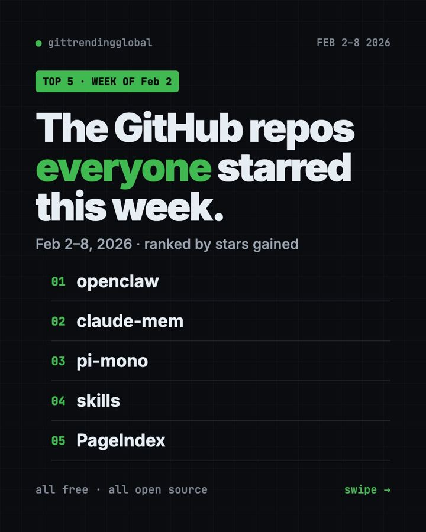
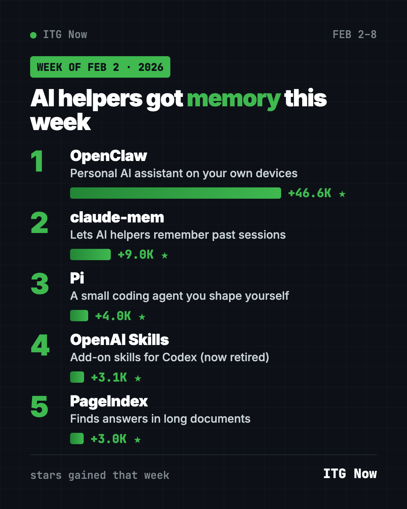
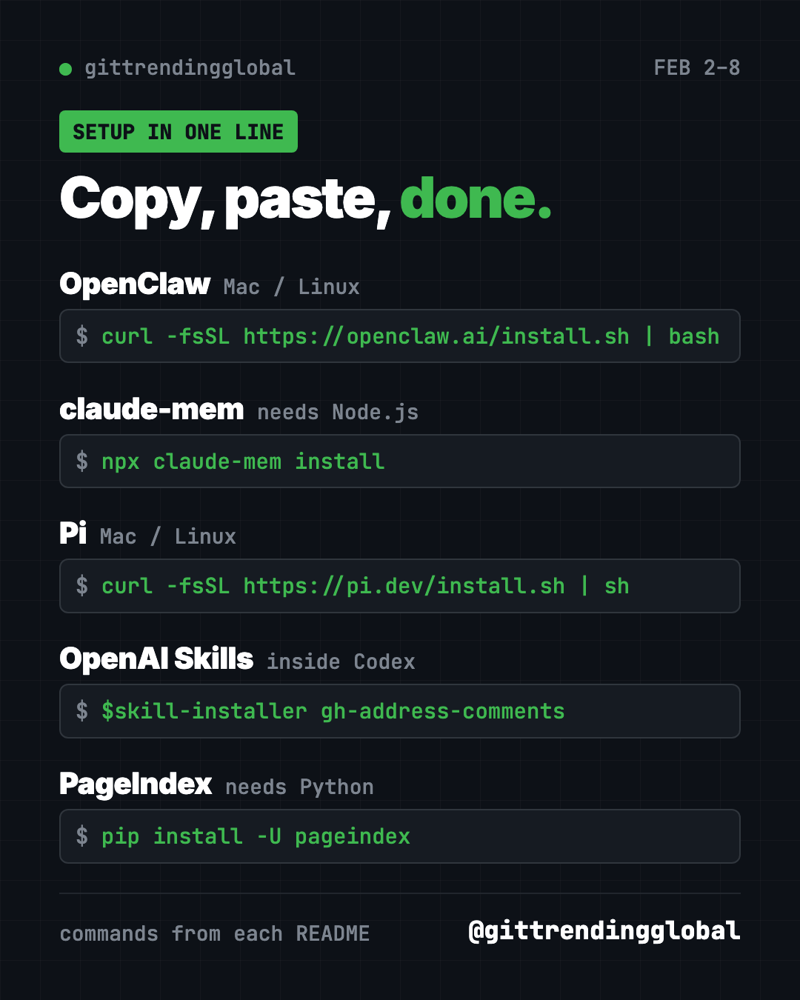

Home › Top repos › GitHub trending this week
Trending GitHub Projects, Week of February 2, 2026
Trending GitHub projects week of February 2, 2026: OpenClaw, claude-mem, Pi, OpenAI Skills and PageIndex, explained simply with copy-paste setup.

The trending GitHub projects week of February 2, 2026 were OpenClaw, claude-mem, Pi, OpenAI Skills and PageIndex. OpenClaw stayed on top for a second week, while claude-mem gave AI helpers something they badly lack: memory.
If you have ever had to re-explain your project to an AI helper every morning, this list is for you. Below is each tool in plain words, the setup line, and a prompt you can hand to an AI.
Key takeaways
- OpenClaw added about 46,600 stars, after its record week before.
- claude-mem lets AI coding helpers remember what happened in past sessions.
- Pi is a small, bendable coding agent that you shape to your own way of working.
- OpenAI Skills was a catalog of add-ons for Codex. It is now retired in favor of OpenAI's plugins repo.
- PageIndex made the list for the third week running.
Trending GitHub projects week of February 2, 2026 side by side
| Rank | Repo | Stars gained | What it does | Price |
|---|---|---|---|---|
| 1 | OpenClaw | +46.6K | Personal AI assistant in your chat apps | Free (MIT), model may cost |
| 2 | claude-mem | +9.0K | Memory across AI sessions | Free (Apache-2.0), optional account |
| 3 | Pi | +4.0K | Minimal coding agent | Free (MIT), model may cost |
| 4 | OpenAI Skills | +3.1K | Add-on skills for Codex (retired) | Free |
| 5 | PageIndex | +3.0K | Answers from long documents | Free (MIT), needs an AI key |
Gains cover February 2 to 8, 2026. Totals were checked on GitHub on October 16, 2026.

1. OpenClaw: second week at the top
Stars: +46.6K this week · about 392K total today
What it is: OpenClaw is a personal AI assistant that runs on your own devices. It answers you inside WhatsApp, Telegram, Slack, Discord, iMessage and more than 20 other apps. It also has apps for Mac, iPhone, Android, Windows and Linux.
Who it's for: People who want one AI helper they can reach from any chat app.
One everyday use: Message it a photo of a receipt and ask it to add the amount to your budget file.
Install it: Copy and paste this on Mac or Linux:
curl -fsSL https://openclaw.ai/install.sh | bash
A setup wizard starts on its own. After that, openclaw dashboard opens the control page.
Install OpenClaw from https://github.com/openclaw/openclaw and connect it to my WhatsApp, asking before each step.
See OpenClaw on GitHub · Read our full OpenClaw guide
2. claude-mem: your AI helper stops forgetting
Stars: +9.0K this week · about 101K total today
What it is: Every new chat with an AI helper starts blank. claude-mem fixes that. It records what your helper does, shrinks it into short notes with AI, and brings the useful parts back next time. It works with Claude Code, Codex, Gemini, OpenCode, OpenClaw and others.
Who it's for: Anyone who works on the same project with an AI helper over many days.
One everyday use: Ask "what did we change in the blog last Tuesday?" and get a real answer.
Install it: You need Node.js. Then copy and paste this:
npx claude-mem install
The installer may ask you to sign in by email link. The README says no card is needed, and you can skip sign-in with a --provider flag.
Install claude-mem with "npx claude-mem install" for Claude Code, skip the online sign-in, and show me how to search past sessions.
3. Pi: a coding agent you shape yourself
Stars: +4.0K this week · about 115K total today
What it is: Pi is a minimal AI coding agent for your terminal. It skips extras like sub-agents and plan mode on purpose. Instead, you add what you want through extensions, skills and themes, or you ask Pi to build them. The project has since moved to the earendil-works account on GitHub.
Who it's for: Developers who like simple tools they can change.
One everyday use: Start Pi in a project folder and ask it to fix one failing test.
Install it: Copy and paste this on Mac or Linux:
curl -fsSL https://pi.dev/install.sh | sh
Then go to your project folder, type pi, and run /login to connect a model.
Install Pi from https://github.com/earendil-works/pi, start it in this folder, and help me log in to a model.

4. OpenAI Skills: a skill shop for Codex (now retired)
Stars: +3.1K this week · about 28K total today
What it is: This was OpenAI's catalog of skills for Codex, its coding helper. A skill is a folder of instructions and scripts for one kind of job. Some came built into Codex. Others you added by name with a built-in installer.
Who it's for: Codex users who want ready-made helpers for common jobs.
One everyday use: Add a skill that helps Codex reply to review comments on GitHub.
Install it: Inside Codex, type this:
$skill-installer gh-address-comments
Find a Codex plugin in https://github.com/openai/plugins that helps with GitHub review comments and install it for me.
⚠️ Heads up: The README now says this repository is deprecated. OpenAI points people to its plugins repository instead.
5. PageIndex: three weeks and counting
Stars: +3.0K this week · about 39K total today
What it is: A tool that helps AI read a long document like a person would: by its sections, not by random chunks. Answers can be traced back to the exact part they came from.
Who it's for: Anyone with long PDFs, like reports, manuals or contracts.
One everyday use: Ask your car manual what the orange warning light means.
Install it: Copy and paste this:
pip install -U pageindex
Use PageIndex on my car manual PDF and explain the orange dashboard warning light, citing the page section.
Which one should you try first?
- You want AI in your chat apps: start with OpenClaw.
- Your AI helper keeps forgetting: add claude-mem.
- You like tools you can bend to your taste: try Pi.
- You use Codex: browse OpenAI's plugins instead of the old skills catalog.
- You have a long PDF: try PageIndex.
FAQ
What were the trending GitHub projects the week of February 2, 2026?
OpenClaw, claude-mem, Pi, OpenAI Skills and PageIndex gained the most stars from February 2 to 8.
Does claude-mem only work with Claude?
No. Despite the name, its README lists Codex, Gemini, OpenCode, OpenClaw, Copilot and more.
Is OpenAI Skills still updated?
No. Its README says it is deprecated and points to OpenAI's plugins repository.
Why is Pi so small?
That is the idea. Pi ships with sensible defaults, and you add only the features you want.
See the best GitHub repos of February 2026 and February 2026 in AI. Or read the January 26 list and the February 9 list.
Want a new free tool explained every day? Follow @gittrendingglobal on Instagram.
📲 See this as a swipeable post on Instagram
Keep reading

Trending GitHub Repos October 2026: The Top 5 So Far
The trending GitHub repos of October 2026 so far: a free Photoshop-style editor, an AI art studio, a big AI model for gaming PCs and more, explained.

Trending GitHub Repos This Week, Oct 5 2026: The Top 5
Trending GitHub repos this week Oct 5 2026: Matt Pocock's skills, the openGym workout tracker, e2e testing, HyperFrames video and claude-mem memory.

GitHub Trending September 28, 2026: VoiceStudio Takes #1
GitHub trending September 28 2026: VoiceStudio, Hindsight, Paperclip, NVIDIA's OpenShell and a free 542-lesson AI course, with setup steps for each.